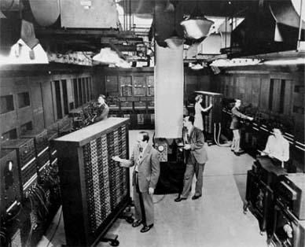

About
The development of the ENIAC was financed by the U.S. Army as a secret project during World War II. Its purpose was to solve the differential equations that described the trajectory of a shell in flight, electronically and with unprecedented speed. The ENIAC was designed and constructed at the University of Pennsylvania between 1943 and 1946 and was officially unveiled to the public on February 14, 1946. Press releases from the War Department and articles that appeared in popular magazines, such as Newsweek, attest to the widespread attention that the ENIAC received upon its public dedication.
